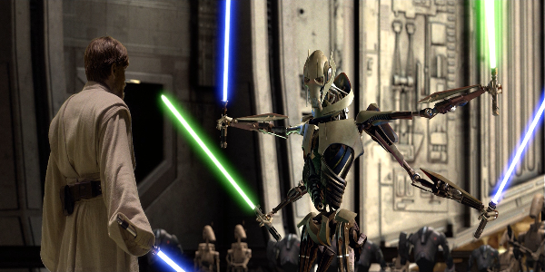

Nearly three years have passed since the beginning of the Clone Wars. The Republic, with the help of the Jedi, take on Count Dooku and the Separatists. With a new threat rising, the Jedi Council sends Obi-Wan Kenobi and Anakin Skywalker to aid the captured Chancellor. Anakin feels he is ready to be promoted to Jedi Master. Obi-Wan is hunting down the Separatist General, Grievous. When Anakin has future visions of pain and suffering coming Padmé's way, he sees Master Yoda for counsel.
When Darth Sidious executes Order 66, it destroys most of all the Jedi have built. Experience the birth of Darth Vader. Feel the betrayal that leads to hatred between two brothers. And witness the power of hope.
